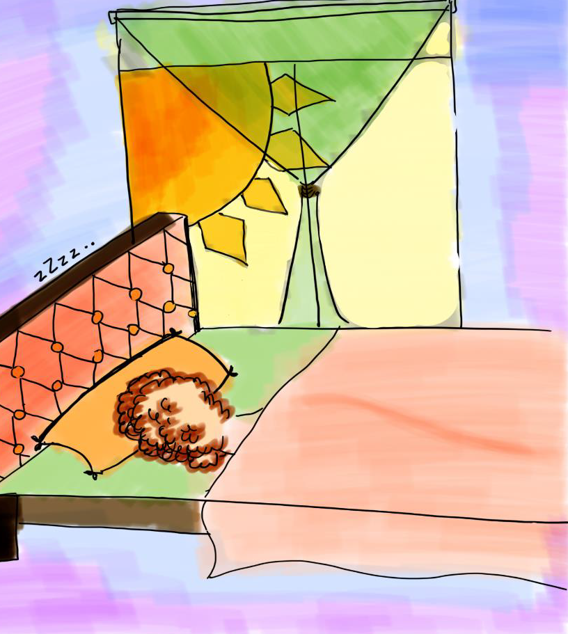
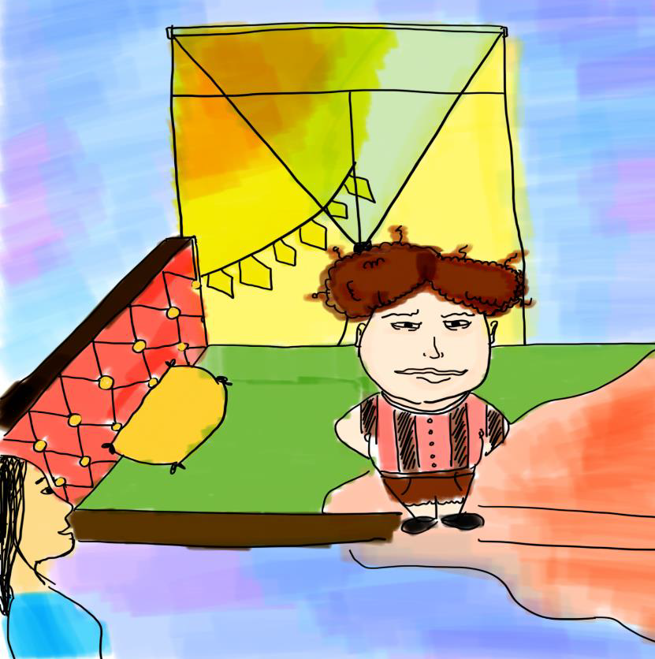

“Ang Reynong Inutil”
Isinulat ni: Marisol G. Posadas
Ilustrasyon ni: Marielle Stella S. Celiss
Maaninag mula sa bintana ang mataas na sikat ni haring araw, abala ang mga katiwala ng palasyo sa pagsasakatuparan ng kanilang mga tungkulin. Sa kabilang banda, tulog mantika ang reyno ng kastilyo sa himbing ng pamamahinga nito. Siya ang namumukod-tanging hari sa lahat sapagkat walang makapapantay sa kanyang pagiging makasarili, batugan at palautos kaya binansagan siyang si Haring Ligwak. Sa madaling sabi, taliwas sa isang magiting na lider ang pag-uugali niya kaya malayo ang loob ng kanyang nasasakupan sa kanya. Mahigpit siya lalo na pagdating sa pangongolekta ng buwis palibhasa’y takot siyang mabawasan ang kanyang kayamanan. Walang pinapalampas na pagkakataon ang hari kapag hindi nakapagbayad ang mga tao. Nagpapataw siya ng kaukulang parusa na dudoblehin ang buwis kapag pumalya sa pabagayad.
Sa kanyang katamaran, hindi siya gigising hangga’t walang gumigising sa kanya. “Mahal na hari, O mahal na hari, isang karangalan na ika’y aking gisingin,” aniya ng masugid niyang katiwala. Hindi pa rin magising-gising ang hari kaya nagdesisyon ang katulong na kumuha ng maliit na tililing at itinuon ito malapit sa tenga ng hari. “Kleng!kleng!kleng!kleng!” tunog ng tililing. Tanghaling tapat na nang mapukaw ang natutulog na kamalayan ng hari. Bigla siyang napatayo at nagwikang, “Bakit ngayon mo lang ako ginising gayong magkakaroon ako ng mahalagang pagpupulong?” naiinis na sabi ng hari. Sadyang pagyuko ang itinugon ng katiwala sa takot nito sa hari kahit alam nito sa sariling may pagkukulang ang hari. Tumungo na si Haring Ligwak sa kanyang silid-liguan.